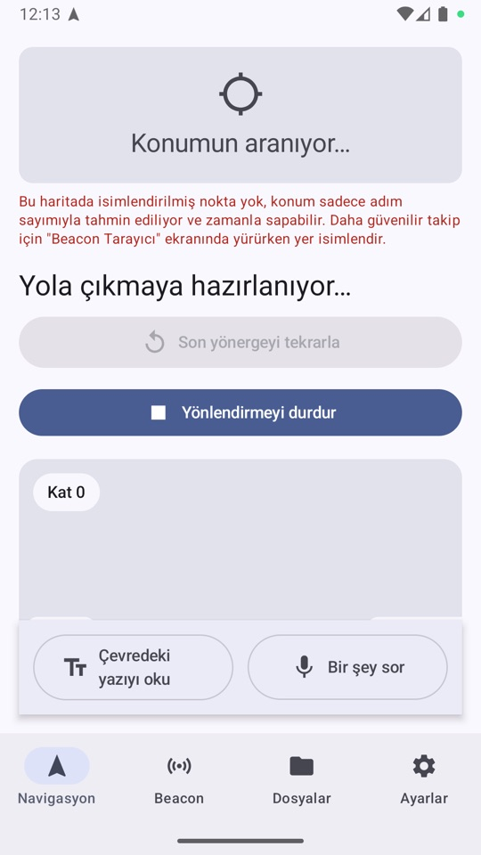
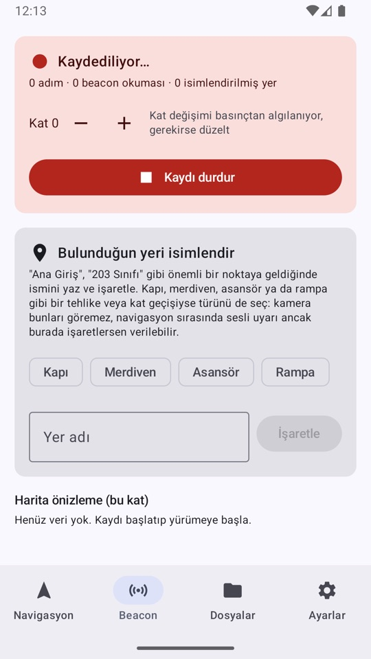
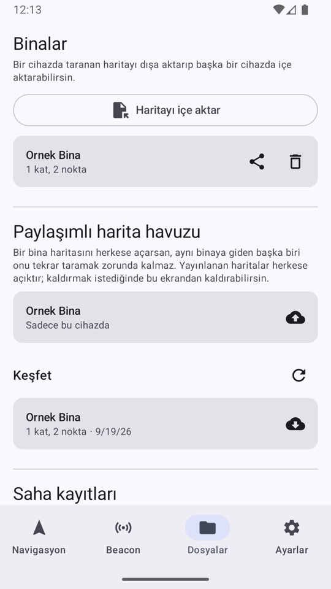
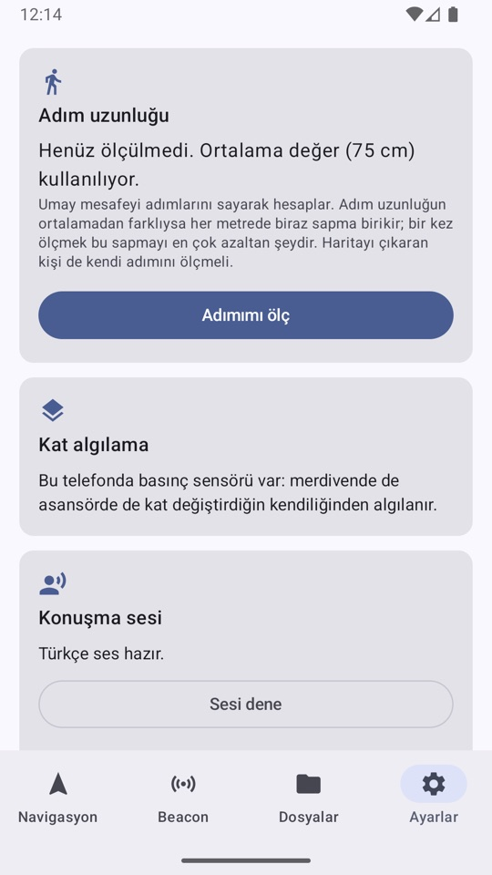

GPS bitince Umay başlar.
Umay, görme engelli kişilere binaların içinde sesle ve titreşimle yol gösteren açık kaynaklı bir Android uygulamasıdır. Hastane, kampüs ya da metro istasyonunda konumu adımlardan ve Bluetooth işaretçilerinden bulur.
Google Play sürümü hazırlanıyor.
Ekrana bakmadan yol bulmak için
Umay'ın her işi, telefonu cepte tutarak kullanılabilmesi için sese ve dokunuşa dayanır.
- Hedefe sesle götürür
- Adım adım, Türkçe konuşma sesiyle. Konuşma hızı ayarlanır; son yönerge tek dokunuşla tekrar edilir.
- Dönüşleri titreşimle bildirir
- Her yönerge türünün kendine ait bir titreşim deseni vardır. Ayarlardaki rehberden hepsini önceden deneyebilirsiniz.
- Önünüzdeki insanı uyarır
- Telefonun kamerası hemen önünüzdeki insanları algılar. Görüntü cihazda işlenir, kaydedilmez.
- Katlar arasında da yol bulur
- Merdiven ve asansör dahil. Telefonda basınç sensörü varsa kat değişimi kendiliğinden algılanır.
- Yazıyı okur, soruyu yanıtlar
- Tabelalardaki yazıyı cihaz üzerinde okur. Sesle sorduğunuz soruları binanın kendi haritasına göre yanıtlar.
- Ekran kapalıyken sürer
- Telefon cebinizdeyken yönlendirme devam eder. Ekran kapalıyken kamera çalışamaz; konum ve yönergeler sürer.
Umay bir yardımcıdır, bir hareket aracı değildir
Beyaz baston ya da rehber köpeğin yerini tutmaz. Kamera yalnızca insanları algılar ve birini kaçırabilir. Merdiven, kapı ve rampalar ancak haritayı çıkaran kişi işaretlediyse bilinir. Konum tahmini ara sıra birkaç metre sapabilir.
Nasıl çalışır
Binalarda GPS çalışmaz. Umay konumu iki kaynaktan birleştirir: adım saymadan ve Bluetooth işaretçilerinden.
Bina haritalanır
Bir kişi Beacon Tarayıcı ile binada bir kez yürür, yerlere isim verir; kapı, merdiven, asansör ve rampaları işaretler.
Hedef seçilir
Kullanıcı gitmek istediği yeri seçer. Rota gerekirse katlar arasında hesaplanır.
Konum bulunur
Adımlar telefonun sensörleriyle sayılır. Haritalanan noktalardaki işaretçilerin sinyali, biriken sapmayı düzeltir.
Yönerge verilir
Yol sesle anlatılır, dönüşler titreşimle bildirilir, kamera önünüzdeki insanları uyarır.
Binada Bluetooth beacon olması gerekir. Beacon olmayan bir yerde Umay yalnızca adım sayabilir ve konum zamanla sapar. Güvenilir yönlendirme için beacon yerleştirilmesi ve binanın haritasının çıkarılması gerekir.
Uygulama
Büyük, sabit konumlu düğmeler; her ekran tek işi yapar.




Uygulamanın dört sekmesi var: Navigasyon, Beacon, Dosyalar ve Ayarlar. Bina haritası Beacon sekmesinde çıkarılır, Dosyalar sekmesinde paylaşılır; konuşma hızı ve titreşim rehberi Ayarlar'dadır.
Binanızı erişilebilir kılmak için
Hastane, üniversite, belediye binası, kütüphane ya da toplu taşıma noktası yöneticisiyseniz Umay'ı kendi binanızda denemek üç adımdır.
Umay geliştirme aşamasında bir açık kaynak projedir. Herhangi bir kurumla pilot uygulama ya da iş birliği duyurusu yapılmamıştır.
| 1. Bluetooth işaretçileri | Koridorlara ve önemli noktalara yerleştirilir. |
|---|---|
| 2. Haritalama | Bir kişi binada bir kez yürür ve yerleri işaretler. Harita bir dosyadır. |
| 3. Paylaşım | Harita cihazlara dosya olarak aktarılır ya da paylaşımlı havuza eklenir. |
Yol haritası
Planlanan işlerin tarihi yoktur; hazır olduklarında ölçümleriyle birlikte duyurulur.
| Durum | İş |
|---|---|
| Çalışıyor | Sesli ve titreşimli yönlendirme, katlar arası rota, kamerayla insan uyarısı, harita paylaşımı. |
| Planlanan | Gerçek binalarda saha doğrulaması. Konum doğruluğu gerçek yürüyüşlerle ve kullanıcı görüşleriyle ölçülür. |
| Planlanan | Yapay zekâ ile kapı ve merdiven algılama. Açık kaynak bir model, halka açık veri setleriyle geliştiriliyor. Henüz uygulamada değil. |
| Planlanan | Doğal dille hedef belirleme. “En yakın tuvalete götür” gibi. |
| Planlanan | Diğer diller. Uygulamanın metinleri çeviriye hazırdır. |
Umay kamera görüntüsünü kaydetmez. Hesap, reklam ve kullanım analizi yoktur.
- Kamera karesi yalnızca o an, cihazda işlenir ve atılır.
- Yapay zekâ modelini geliştirmek için de uygulamadan görüntü toplanmaz.
- Harita ve kayıtlar, siz paylaşmadıkça cihazınızdan çıkmaz.
Türkiye'de bina içi erişilebilirlik için ortak bir altyapı kuruyoruz
Umay, GNU Genel Kamu Lisansı sürüm 3 ile dağıtılır. Kaynak kodunu inceleyebilir, değiştirebilir ve paylaşabilirsiniz. Hata bildirimi, çeviri, test ve kod katkıları memnuniyetle karşılanır. Görme engelli kullanıcılardan ve uzmanlardan geri bildirim özellikle değerlidir.